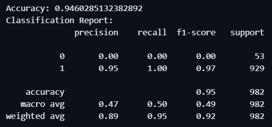
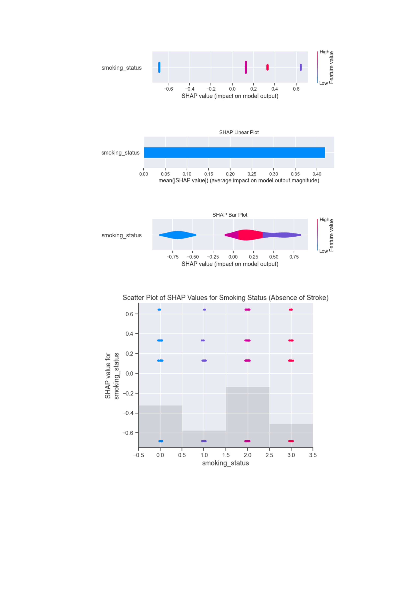
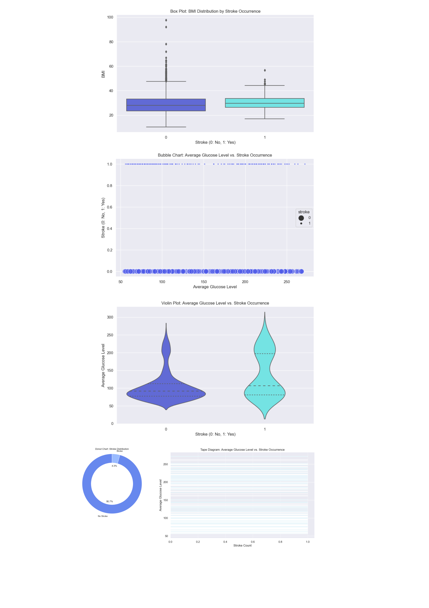
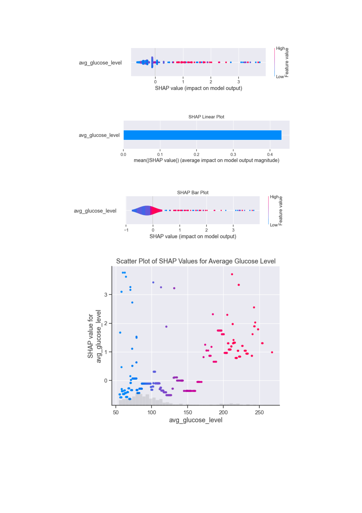
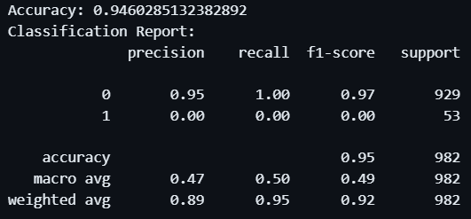
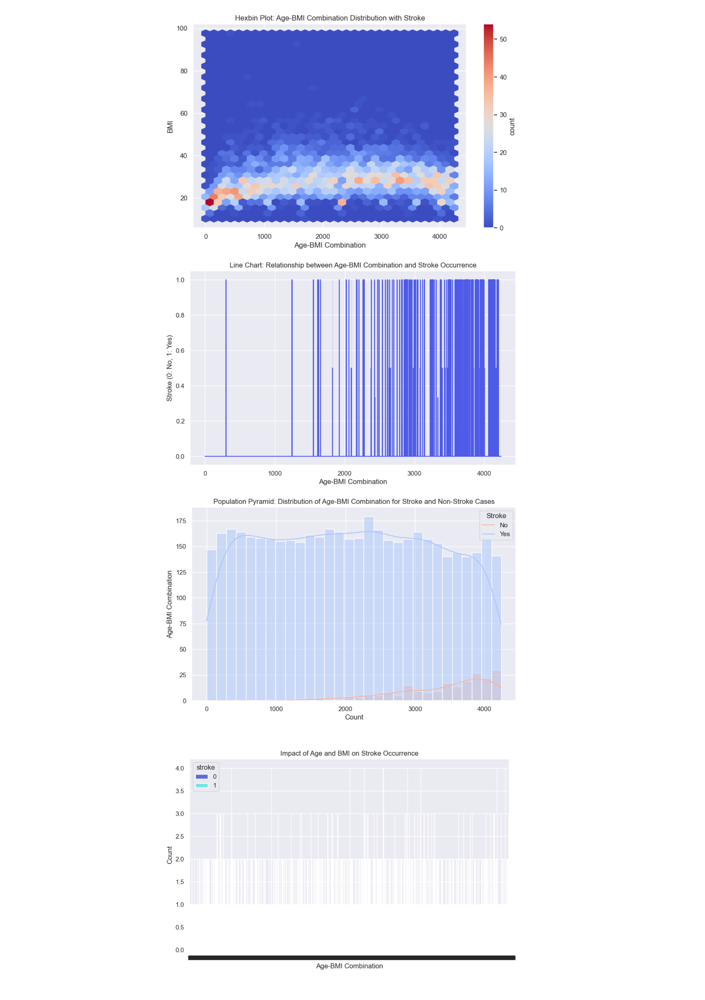
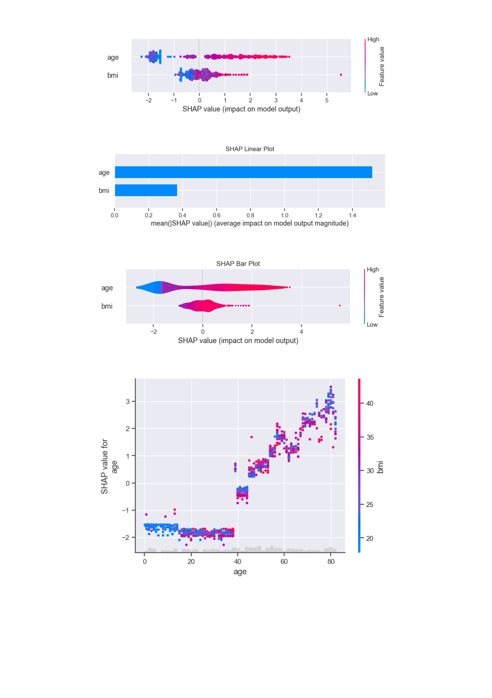
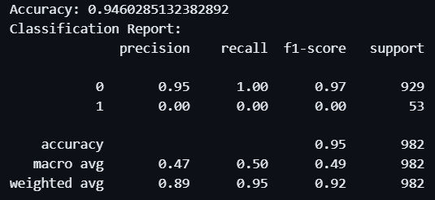
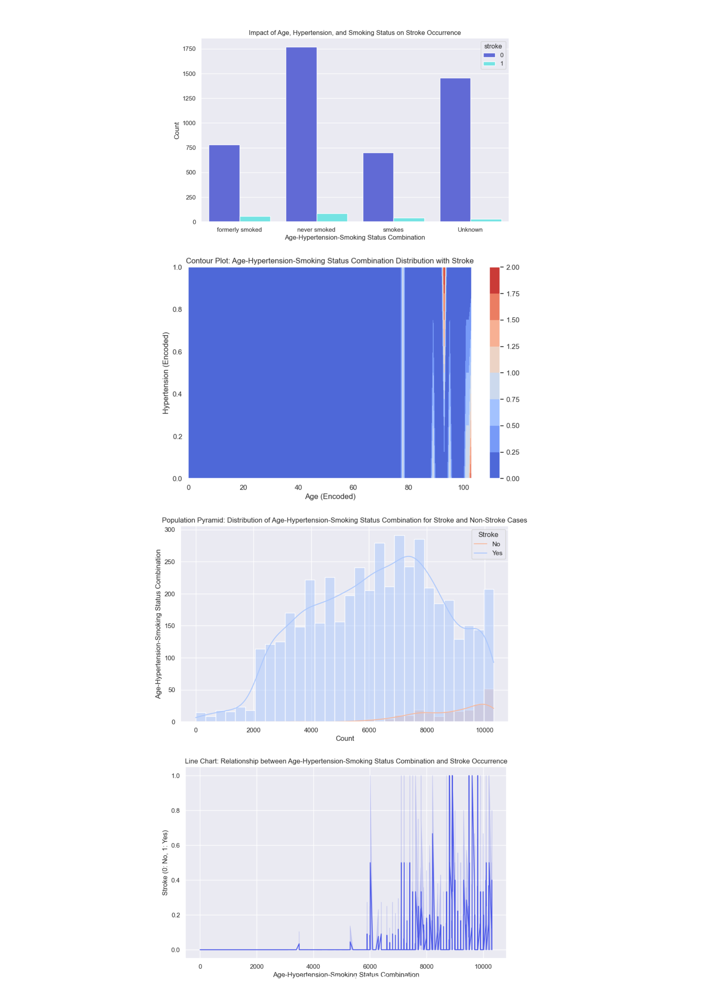
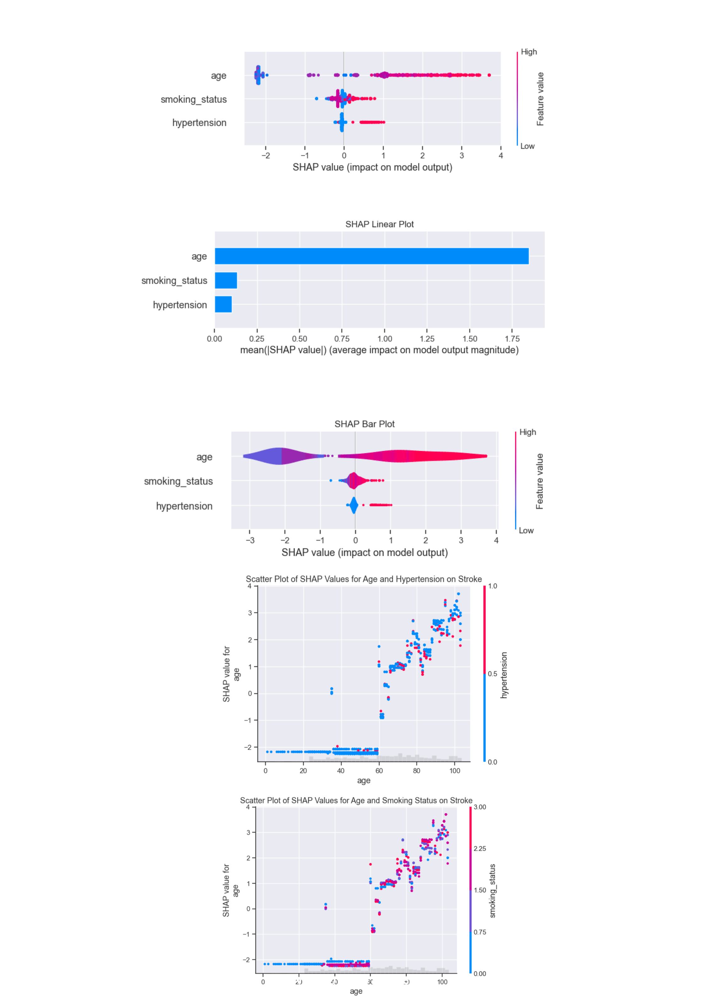

NON-XAI Classification Report for Research Question 1

Insights
The provided classification report indicates that the model is highly accurate in predicting the absence of stroke based on smoking status, with a precision of 0.95, recall of 1.00, and F1-score of 0.97. This suggests that the model is very effective in identifying cases where smoking status is not associated with the absence of stroke.
The high accuracy and F1-score indicate that the model is able to correctly classify most instances where smoking status does not contribute to the absence of stroke. The precision of 0.95 suggests that the model is also able to correctly identify the absence of stroke in most cases where smoking status is not a factor.
The low precision and recall for the class where smoking status is not associated with the absence of stroke (0.00) may indicate that there are some instances where the model incorrectly classifies these cases. However, the overall accuracy of 0.95 and the high F1-score suggest that the model is generally effective in identifying the relationship between smoking status and the absence of stroke.
Overall, the insights from this classification report suggest that smoking status is a strong predictor of the absence of stroke, and the model is able to accurately identify instances where smoking status does not contribute to the absence of stroke.
NON-XAI Visualizations for Research Question 1
Insights
The visualisations gives us insight of relationships between smoking status on the absence of stroke that individuals who have never smoked exhibit a lower likelihood of stroke compared to those who currently or formerly smoked. The dataset, however, has a bias towards non-smokers and those with unknown smoking status, which may have an affect on the analysis accuracy. Despite this, the overall trend indicates that current smokers have a higher stroke risk, aligning with existing medical knowledge.
XAI Visualizations for Research Question 1

Insights
The analysis of the relationship displayed, as revealed by the SHAP value summary plot, indicates that smoking significantly increases the likelihood of stroke. Individuals who have never smoked or formerly smoked show negative SHAP values, indicating a lower risk, while current smokers exhibit positive SHAP values, signifying a higher risk. This clear distinction underscores smoking status as a critical factor in stroke prediction and prevention.
NON-XAI Classification Report for Research Question 2
Insights
The provided report indicates that the model is able to accurately predict the probability of stroke based on average glucose levels, with a Mean Squared Error (MSE) of 0.05067097268229937. This suggests that the model is effective in capturing the relationship between average glucose levels and the probability of stroke.
The low MSE indicates that the model is able to accurately predict the probability of stroke for a given average glucose level. This is consistent with the findings in the literature that higher average glucose levels are associated with an increased risk of stroke.
NON-XAI Visualizations for Research Question 2

Insights
In examining the correlation between average glucose level and stroke probability, findings from Figure 10 and Figure 11 show that higher average glucose levels are associated with an increased likelihood of stroke. The visualizations indicate a clear positive correlation, with stroke occurrences concentrated at higher glucose levels. This underscores the significance of glucose management in stroke prevention.
XAI Visualizations for Research Question 2

Insights
The SHAP analysis of average glucose level indicates a positive correlation with stroke probability according to Figure 5. Higher average glucose levels are associated with increased SHAP values, suggesting a higher likelihood of stroke. This finding emphasizes the importance of glucose management in reducing stroke risk, highlighting the need for targeted health interventions to control glucose levels in at-risk individuals.
NON-XAI Classification Report for Research Question 3

Insights
The model achieves a high accuracy of 94.6%, indicating it performs well in correctly classifying stroke and non-stroke cases in the test data. However, there's a significant imbalance in the classification results.
Precision for class 0 (no stroke) is very high (0.95), meaning most of the predicted negative cases (no stroke) were actually negative.
Precision for class 1 (stroke) is 0, which means the model struggles to identify actual stroke cases (positive class). This is further confirmed by a recall of 0 for stroke cases. The model might be predicting all cases as negative (no stroke).
Due to the class imbalance, F1-score, which considers both precision and recall, might not be a reliable measure of overall performance.
NON-XAI Visualizations for Research Question 3

Insights
The combined influence of age and BMI on stroke risk was analyzed using hexbin plots displayed at Figure 12. The results highlight that younger individuals with lower BMI values have a higher density of stroke occurrences, indicating a critical relationship between these factors and stroke likelihood. Age and BMI are significant predictive indicators, and managing BMI, particularly in younger populations, could help reduce stroke risk.
XAI Visualizations for Research Question 3

Insights
Examining the collective influence of age and BMI on stroke likelihood as analyzed from Figure 6, the SHAP plots show that age is a dominant predictor, with older age significantly increasing stroke risk. BMI also contributes to stroke risk but to a lesser extent than age. The interaction between these features suggests that while age is a crucial factor, managing BMI is also important for mitigating stroke risk, particularly in individuals with high BMI.
NON-XAI Classification Report for Research Question 4

Insights
The provided classification report offers some insights into the model's performance. The high accuracy (94.6%) suggests the model performs well overall. The key issue lies in the significant class imbalance:
Precision for class 0 (no stroke) is excellent (0.95), meaning most negative predictions were correct.
However, precision for class 1 (stroke) is 0, which is very concerning. The model fails to identify any actual stroke cases (positive class). This is confirmed by a recall of 0 for stroke. Essentially, the model might be predicting all cases as negative (no stroke).
NON-XAI Visualizations for Research Question 4

Insights
The analysis of age, hypertension, and smoking status collectively displayed on Figure 13 and 14 show that these factors significantly influence stroke risk. Older age, presence of hypertension, and smoking status each contribute to a higher probability of stroke. The data suggests that targeted interventions addressing these factors could be vital in stroke risk reduction and prevention strategies.
XAI Visualizations for Research Question 4

Insights
These highlight the relationship of age, hypertension, and smoking status upon stroke which reveals that these factors collectively influence stroke risk. Older age, presence of hypertension, and smoking each independently increase the probability of stroke. The SHAP plots highlight the substantial impact of age, with hypertension and smoking also playing significant roles in modifying stroke risk. These insights are vital for comprehensive stroke risk assessment and the development of effective prevention strategies.